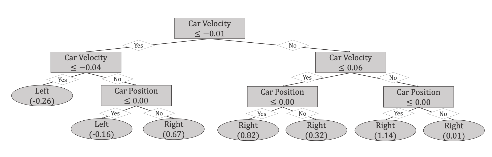

Robotics: Science and Systems (RSS), 2026
Project Page / Code / ArXiv
Optimizing SAC for high-speed robotics training. Adopted as a baseline for high-dimensional robotic benchmarks.

International Conference on Learning Representations (ICLR), 2026
Project Page / Code / ArXiv
Accelerating training by improving the conditioning of the optimization landscape in deep RL.
NeurIPS, 2025
ArXiv
A study on how normalization stabilizes and scales off-policy learning for complex tasks.

International Conference on Learning Representations (ICLR), 2025
Code / ArXiv
Handles information bottleneck issues in tree-structured RL via direct optimization.